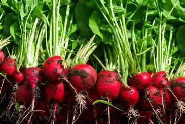
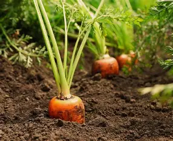

Explore Crops

Wheat

Rice

Maize

Tomato

Radish

Onion

Climate: Cool temperate regions with moderate rainfall.
Soil: Well-drained loamy soil rich in organic matter.
Uses: Staple food, flour, bread, pasta.
Climate: Warm temperatures with abundant water.
Soil: Clayey soil with good water retention.
Uses: Staple food for billions, used in diverse cuisines.
Climate: Sunny climates with fertile soil.
Soil: Sandy loam soil with good drainage.
Uses: Food, fodder, biofuel, industrial products.

Climate: Sunny climates with fertile soil.
Soil: Sandy loam soil with good drainage.
Uses: Food, fodder, biofuel, industrial products.
Climate: Sunny climates with fertile soil.
Soil: Sandy loam soil with good drainage.
Uses: Food, fodder, biofuel, industrial products.